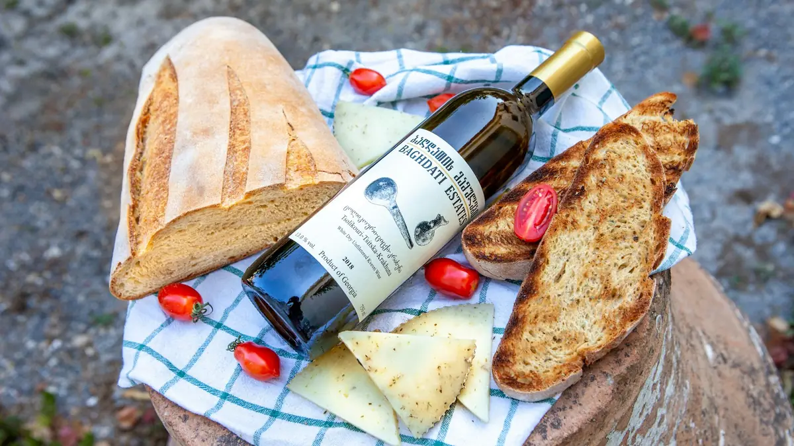

Home › Wine stories › Georgia's Qvevri: 8,000 Years of Wine Fermented in Buried Clay
Georgia's Qvevri: 8,000 Years of Wine Fermented in Buried Clay

Photo: Alexandra Torro on Unsplash
Long before Bordeaux or Burgundy, farmers in Georgia were making wine in huge clay jars – a tradition that still lives on in the qvevri, buried in the ground.
If you want to stand at the very start of wine's family tree, head south from Tbilisi into the hills of Kvemo Kartli. In two small Stone Age villages here, Gadachrili Gora and Shulaveris Gora, about 50 kilometres from the Georgian capital, archaeologists have found the oldest chemical proof of grape wine yet discovered.
The finds were published in the journal PNAS in November 2017 by a team led by Patrick McGovern of the University of Pennsylvania Museum, working with the Georgian National Museum and the University of Toronto. Fragments of large clay jars, sunk into the floors of round Neolithic houses, still held traces of tartaric acid, the tell-tale fingerprint of grapes, along with malic, succinic and citric acids. Eight jars tested positive, dated to roughly 6000 to 5800 BC.
That pushed the story of wine back by around 600 to 1,000 years. The previous record holder was Hajji Firuz Tepe in Iran's Zagros Mountains, at about 5400 to 5000 BC. Grape pollen and starch in the soil suggest vines grew right beside the villages, and one jar even carries raised decoration that the researchers think may show bunches of grapes. Interestingly, no tree resin turned up in the residues, so these early Georgians seem to have made pure grape wine.
What makes Georgia special is that the clay jar never really went away. Today it is called a qvevri: an egg-shaped earthenware vessel, ranging from a few litres to almost 10,000, coated inside with beeswax while still warm from the kiln. Crushed grapes go in with their juice, skins, pips and often stalks; the jar is sealed and buried up to its neck, where the cool, steady temperature of the earth calms the fermentation. Traditionally it stays closed until the following spring.
In 2013 UNESCO added the ancient qvevri method to its list of the Intangible Cultural Heritage of Humanity, noting that families and villages across Georgia still use it and that the wine cellar, or marani, is seen as the most sacred room in the house. The craft of making the jars is rarer: only a handful of master potters remain, and winemakers may wait up to a year for a new vessel.
Styles vary around the country. In Kakheti, the main wine region in the east, white grapes are often left on their skins for months, giving deep golden, gently grippy wines that many now call amber or orange wine. In Imereti, further west, the qvevri tend to be smaller and many are made by local potters.
To taste 8,000 years of history, look for a qvevri Rkatsiteli or Kakhuri Mtsvane from Kakheti: expect dried apricot, walnut, black tea and a firm, almost red-wine texture. Serve it cool rather than cold, in a large glass, alongside Georgian classics such as khachapuri or walnut-rich dishes. For red, a qvevri Saperavi brings dark plum, sour cherry and real depth.
Sources
- Ancient Georgian traditional Qvevri wine-making method – UNESCO Intangible Cultural Heritage
- Early Neolithic wine of Georgia in the South Caucasus – PNAS (via PubMed Central)
- Oldest Evidence of Wine Making Found in Georgia – Smithsonian Magazine
- Earliest evidence of winemaking dates to about 6000 BC – ScienceDaily
- Qvevri wines from Georgia: a winemaking story and 12 wines to try – Decanter
- Georgia – the cradle of wine – Georgian National Tourism Administration
The Wine Reference newsletter
New wines, stories and career guides, one email a week at most.
Over 18s only. Unsubscribe any time with one click. Your email is stored securely by Kit and never shared.
Support The Wine Reference
This guide is free, with no paywall. If it helped you choose a bottle, you can buy me a glass and keep it growing.
🍷 Buy me a glass